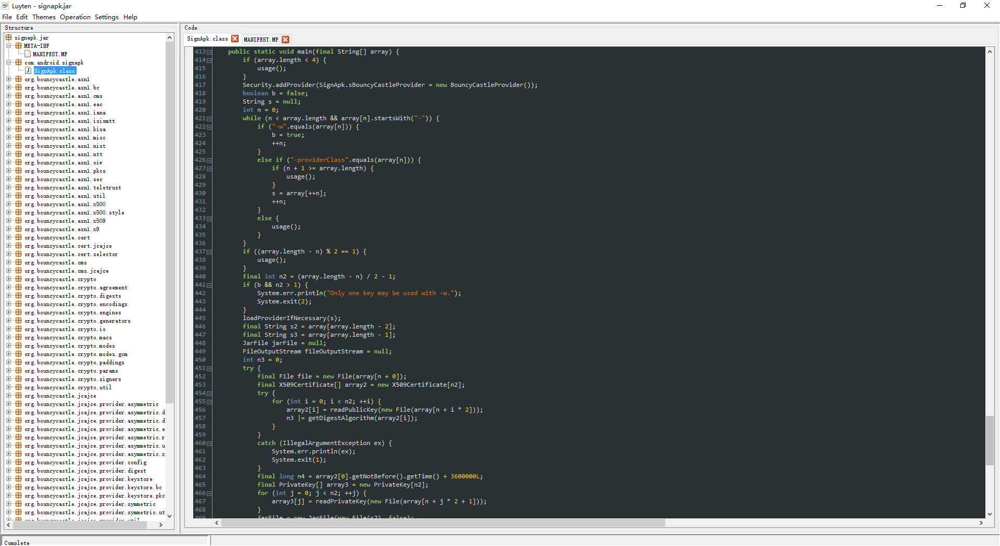

Author:wnagzihxa1n
E-Mail:wnagzihxa1n@gmail.com
签名是安卓应用重要的一个组成部分，本文简单介绍下安卓签名的原理
先随便写一个应用作为测试，非常随便
使用Build功能生成一个编译器默认签名的APK，命名为Demo1
Build->Build APK
解压缩Demo1，有一个META-INF文件夹，里面有三个文件，这就是签名相关的文件
CERT.RSA
CERT.SF
MANIFEST.MF

再使用签名功能给Demo1重签名，重签名后的APK命名为Demo2
Build->Generate Signed APK
弹出一个框，需要输入数据

解释一下每一个Item的意思
- Key store path : 签名文件存储的路径
- Key store password : 存储的密码
- Key alias : 别名
- Key password : 秘钥的密码
- Remember passwords : 记住密码
可以选择生成一个.jks文件，也可以选择一个已存在的
生成一个，按照说明填

生成后，回到上一层

下一步，红框内有两个勾选的选项，这个V2是在Android 7.0开始引入的校验机制

我们这里暂时不使用V2选项，只勾选V1进行签名
使用keytool + jarsigner来签名，两个工具都在jdk\bin路径下
使用说明
-alias <alias> 要处理的条目的别名
-keyalg <keyalg> 密钥算法名称
-keysize <keysize> 密钥位大小
-sigalg <sigalg> 签名算法名称
-destalias <destalias> 目标别名
-dname <dname> 唯一判别名
-startdate <startdate> 证书有效期开始日期/时间
-ext <value> X.509 扩展
-validity <valDays> 有效天数
-keypass <arg> 密钥口令
-keystore <keystore> 密钥库名称
-storepass <arg> 密钥库口令
-storetype <storetype> 密钥库类型
-providername <providername> 提供方名称
-providerclass <providerclass> 提供方类名
-providerarg <arg> 提供方参数
-providerpath <pathlist> 提供方类路径
-v 详细输出
-protected 通过受保护的机制的口令
生成keystore
E:\安卓应用签名原理>keytool -genkey -v -keyalg RSA -keystore Demo.keystore -alias wnagzihxain.keystore -validity 10000
输入密钥库口令:
再次输入新口令:
您的名字与姓氏是什么?
[Unknown]: zihxain wnag
您的组织单位名称是什么?
[Unknown]: 0xLuyu Team
您的组织名称是什么?
[Unknown]: 0xLuyu Team
您所在的城市或区域名称是什么?
[Unknown]: WZ
您所在的省/市/自治区名称是什么?
[Unknown]: WZ
该单位的双字母国家/地区代码是什么?
[Unknown]: CN
CN=zihxain wnag, OU=0xLuyu Team, O=0xLuyu Team, L=WZ, ST=WZ, C=CN是否正确?
[否]: y
正在为以下对象生成 2,048 位RSA密钥对和自签名证书 (SHA256withRSA) (有效期为 10,000 天):
CN=zihxain wnag, OU=0xLuyu Team, O=0xLuyu Team, L=WZ, ST=WZ, C=CN
输入 <wnagzihxain.keystore> 的密钥口令
(如果和密钥库口令相同, 按回车):
[正在存储Demo.keystore]
查看keystore的信息
E:\>keytool -list -v -keystore Demo.keystore -storepass ******
密钥库类型: JKS
密钥库提供方: SUN
您的密钥库包含 1 个条目
别名: wnagzihxain.keystore
创建日期: 2017-5-7
条目类型: PrivateKeyEntry
证书链长度: 1
证书[1]:
所有者: CN=zihxain wnag, OU=0xLuyu Team, O=0xLuyu Team, L=WZ, ST=WZ, C=CN
发布者: CN=zihxain wnag, OU=0xLuyu Team, O=0xLuyu Team, L=WZ, ST=WZ, C=CN
序列号: 5afa7ea1
有效期开始日期: Sun May 07 23:33:06 CST 2017, 截止日期: Thu Sep 22 23:33:06 CST 2044
证书指纹:
MD5: C7:F3:21:43:C2:AF:AC:3C:78:E2:60:52:A2:A9:7B:9F
SHA1: CD:E7:06:96:19:64:E0:B3:CA:9E:DE:37:39:61:20:D5:9E:77:8F:EF
SHA256: 62:11:21:B4:5F:C6:DC:86:24:4F:58:4C:9C:0E:7C:8D:51:C4:B9:2E:DB:84:A9:D4:8B:26:11:24:AF:53:F2:00
签名算法名称: SHA256withRSA
版本: 3
扩展:
#1: ObjectId: 2.5.29.14 Criticality=false
SubjectKeyIdentifier [
KeyIdentifier [
0000: 32 CE CB F2 1A 7B A2 49 63 84 A1 4E 6E 27 93 6B 2......Ic..Nn'.k
0010: 67 CF 41 89 g.A.
]
]
*******************************************
*******************************************
在前面使用Android Studio签名的时候，生成了一个Demo.jks，同样使用keytool查看
E:\>keytool -list -v -keystore Demo.jks -storepass ******
密钥库类型: JKS
密钥库提供方: SUN
您的密钥库包含 1 个条目
别名: wnagzihxain
创建日期: 2016-8-6
条目类型: PrivateKeyEntry
证书链长度: 1
证书[1]:
所有者: CN=wnagzihxain, C=CN
发布者: CN=wnagzihxain, C=CN
序列号: 1037b03b
有效期开始日期: Sat Aug 06 23:38:41 CST 2016, 截止日期: Wed Jul 31 23:38:41 CST 2041
证书指纹:
MD5: 01:C2:69:AA:DB:25:FD:44:60:0C:5C:B3:7C:AA:6A:94
SHA1: FD:BE:50:C4:99:27:BA:A2:27:F2:0E:BC:64:27:B1:18:BD:5C:96:F3
SHA256: 81:01:B4:D9:C9:0E:8F:4E:30:F2:AC:8C:83:19:AD:07:37:6E:11:4D:C7:C5:F6:7B:D7:0B:2B:87:48:CC:45:D0
签名算法名称: SHA256withRSA
版本: 3
扩展:
#1: ObjectId: 2.5.29.14 Criticality=false
SubjectKeyIdentifier [
KeyIdentifier [
0000: 02 DB 43 1B 4A 53 92 E8 E5 48 99 D9 AE 53 53 B0 ..C.JS...H...SS.
0010: 29 06 B9 88 )...
]
]
*******************************************
*******************************************
再使用该文件给app-debug.apk重签名，要注意的是，得先把app-debug.apk里的META-INF删除
C:\Program Files\Java\jdk1.8.0_72\bin>jarsigner -verbose -keystore Demo.keystore -signedjar E:\Demo3.apk app-debug.apk wnagzihxain.keystore
出现一大堆
......
正在签名: res/layout/notification_template_lines_media.xml
正在签名: res/layout/notification_template_media.xml
正在签名: res/layout/notification_template_media_custom.xml
正在签名: res/layout/notification_template_part_chronometer.xml
正在签名: res/layout/notification_template_part_time.xml
正在签名: res/layout/select_dialog_item_material.xml
正在签名: res/layout/select_dialog_multichoice_material.xml
正在签名: res/layout/select_dialog_singlechoice_material.xml
正在签名: res/layout/support_simple_spinner_dropdown_item.xml
正在签名: res/mipmap-hdpi-v4/ic_launcher.png
正在签名: res/mipmap-hdpi-v4/ic_launcher_round.png
正在签名: res/mipmap-mdpi-v4/ic_launcher.png
正在签名: res/mipmap-mdpi-v4/ic_launcher_round.png
正在签名: res/mipmap-xhdpi-v4/ic_launcher.png
正在签名: res/mipmap-xhdpi-v4/ic_launcher_round.png
正在签名: res/mipmap-xxhdpi-v4/ic_launcher.png
正在签名: res/mipmap-xxhdpi-v4/ic_launcher_round.png
正在签名: res/mipmap-xxxhdpi-v4/ic_launcher.png
正在签名: res/mipmap-xxxhdpi-v4/ic_launcher_round.png
正在签名: resources.arsc
jar 已签名。
jarsigner.exe是JDK自带的工具，还有一个签名工具，从名字来看就知道是专门为APK而生的，它就是signapk.jar
前者使用的是.keystore，后者需要使用.pk8，x509.pem
这两个可以使用默认的，也可以自己生成，生成略微有点麻烦
大概的生成过程就是
Demo.keystore->.p12->.rsa.pem
打开.rsa.pem，拷贝如下段，存为.x509.pem
-----BEGIN CERTIFICATE-----
......
-----END CERTIFICATE-----
再生成.pk8
这里使用Android Killer默认的签名文件
E:\>java -jar signapk.jar testkey.x509.pem testkey.pk8 app-debug.apk Demo4.apk
在上面四种签名过程中，最终都生成了META-INF文件夹，里面有三个文件，虽然不同签名方式文件名不一样
首先是MANIFEST.MF
Manifest-Version: 1.0
Built-By: Generated-by-ADT
Created-By: Android Gradle 2.3.1
Name: res/drawable-hdpi-v4/abc_list_longpressed_holo.9.png
SHA-256-Digest: 1cZEsA7nm9Tx/LeJ67+J55wMb+qHjfvEqMZMO+NLWwM=
Name: res/drawable-xxhdpi-v4/abc_ic_star_half_black_16dp.png
SHA-256-Digest: XSYy3/spelJXwJKhqb00BpK8HO9SdNyiy8Shyc0V+c4=
Name: res/drawable-xhdpi-v4/notification_bg_low_pressed.9.png
SHA-256-Digest: IDQyIvn3ndVlw6IkhJTUUucIIKwcQ3Fzw4ut1F+WKv0=
Name: res/drawable-xxxhdpi-v4/abc_btn_switch_to_on_mtrl_00012.9.png
SHA-256-Digest: 3+UAh4D2QnFyzLSc0ML1zNCqo745Ibh1NiyeZaCN92w=
Name: res/color-v23/abc_btn_colored_text_material.xml
SHA-256-Digest: QVTY0LLLS88VfhbxAV7Y2goakoKqmGaZ1crFtTBIP18=
Name: res/drawable/notification_bg_low.xml
SHA-256-Digest: blvD+yxBki5ik7P9etg0bk0ZVC2fMNlnsqvcfoEDYXo=
Name: res/drawable-xhdpi-v4/abc_ic_star_black_48dp.png
SHA-256-Digest: 0QhcZfJCFkxFlZiBNdW1/bCAhtXMptbAENd8hTDMsgQ=
......
这个文件存储了所有文件的SHA256散列值经过Base64编码的数据
比如我们拿第一个Item计算一下
Name: res/drawable-hdpi-v4/abc_list_longpressed_holo.9.png
SHA-256-Digest: 1cZEsA7nm9Tx/LeJ67+J55wMb+qHjfvEqMZMO+NLWwM=
使用工具得到SHA256的Hex String值
d5c644b00ee79bd4f1fcb789ebbf89e79c0c6fea878dfbc4a8c64c3be34b5b03 *abc_list_longpressed_holo.9.png
写一下Java模拟过程，要注意的是，这里SHA256计算出来的是Hex String，需要转为byte[]再计算，所以直接拿去Base64解密是会看到一堆乱码的
import java.lang.reflect.Method;
public class MyClass {
public static void main(String[] args) throws Exception {
String encodeString = encodeBase64(hexToBytes("d5c644b00ee79bd4f1fcb789ebbf89e79c0c6fea878dfbc4a8c64c3be34b5b03"));
System.out.println(encodeString);
}
public static byte[] hexToBytes(String hexString) {
char[] hex = hexString.toCharArray();
int length = hex.length / 2;
byte[] rawData = new byte[length];
for (int i = 0; i < length; i++) {
int high = Character.digit(hex[i * 2], 16);
int low = Character.digit(hex[i * 2 + 1], 16);
int value = (high << 4) | low;
if (value > 127) {
value -= 256;
}
rawData[i] = (byte) value;
}
return rawData;
}
public static String encodeBase64(byte[]input) throws Exception{
Class<?> clazz=Class.forName("com.sun.org.apache.xerces.internal.impl.dv.util.Base64");
Method mainMethod= clazz.getMethod("encode", byte[].class);
mainMethod.setAccessible(true);
Object retObj=mainMethod.invoke(null, new Object[]{input});
return (String)retObj;
}
}
输出
1cZEsA7nm9Tx/LeJ67+J55wMb+qHjfvEqMZMO+NLWwM=
跟MANIFEST.MF中是一样的，这里有一点要注意
这里是SHA1还是SHA256需要根据前缀来确定，比如有的是
SHA1-Digest: *********************************
这两个散列算法的输出长度是不一样的，前者输出160bit，后者则是256bit，长度不一样，计算结果也不一样，一定要注意这点
然后是CERT.SF文件，这个看起来和MANIFEST.MF一样
Signature-Version: 1.0
SHA-256-Digest-Manifest: /Hxz0liA9+ZerFY/Vl7MeXlUXx3sxC7silsy2SKAB8k=
Created-By: 1.0 (Android)
Name: res/drawable-hdpi-v4/abc_list_longpressed_holo.9.png
SHA-256-Digest: 1cZEsA7nm9Tx/LeJ67+J55wMb+qHjfvEqMZMO+NLWwM=
Name: res/drawable-xxhdpi-v4/abc_ic_star_half_black_16dp.png
SHA-256-Digest: XSYy3/spelJXwJKhqb00BpK8HO9SdNyiy8Shyc0V+c4=
Name: res/drawable-xhdpi-v4/notification_bg_low_pressed.9.png
SHA-256-Digest: IDQyIvn3ndVlw6IkhJTUUucIIKwcQ3Fzw4ut1F+WKv0=
Name: res/drawable-xxxhdpi-v4/abc_btn_switch_to_on_mtrl_00012.9.png
SHA-256-Digest: 3+UAh4D2QnFyzLSc0ML1zNCqo745Ibh1NiyeZaCN92w=
Name: res/color-v23/abc_btn_colored_text_material.xml
SHA-256-Digest: QVTY0LLLS88VfhbxAV7Y2goakoKqmGaZ1crFtTBIP18=
首先是最上面那个块，这个值存储的是MANIFEST.MF整个文件的SHA256散列值的Base64编码
SHA-256-Digest-Manifest: /Hxz0liA9+ZerFY/Vl7MeXlUXx3sxC7silsy2SKAB8k=
计算出MANIFEST.MF的SHA256散列值
fc7c73d25880f7e65eac563f565ecc7979545f1decc42eec8a5b32d9228007c9 *MANIFEST.MF
使用上面的代码计算出结果，对比发现，两者是一样的
/Hxz0liA9+ZerFY/Vl7MeXlUXx3sxC7silsy2SKAB8k=
后面的数据就是将每一个Item做SHA256散列，然后Base64编码
最后是CERT.RSA，这个后缀就是所使用的算法，有的是.DSA
这个文件要用openssl解开。。。。。。
我就不解了。。。。。。
具体我们在代码里分析，jarsigner.exe我就不分析了。。。。。。
直接分析signapk.jar，这个Java写的比较容易读
网上有一些版本只有一个SignApk.class文件，我这里是1000k的版本

首先是判断参数个数，参数个数不对输出Usage
if (array.length < 4) {
usage();
}
输出Usage
private static void usage() {
System.err.println("Usage: signapk [-w] [-providerClass <className>] publickey.x509[.pem] privatekey.pk8 [publickey2.x509[.pem] privatekey2.pk8 ...] input.jar output.jar");
System.exit(2);
}
然后接下来就是一大堆处理参数以及各种判断，我们关注最终的计算
final JarOutputStream jarOutputStream = new JarOutputStream(fileOutputStream);
jarOutputStream.setLevel(9);
final Manifest addDigestsToManifest = addDigestsToManifest(jarFile, n3);
copyFiles(addDigestsToManifest, jarFile, jarOutputStream, n4);
signFile(addDigestsToManifest, jarFile, array2, array3, jarOutputStream);
jarOutputStream.close();
跟过去也都是很明显的计算
这里可以对比一下另一个很类似的工具apksigner.jar，路径如下
Android\sdk\build-tools\25.0.1\lib\apksigner.jar
使用工具反编译，入口根据参数的不同调用函数，签名是sign，如图红框所示

入口调用
sign(Arrays.<String>copyOfRange(params, 1, params.length));
具体实现如下
private static void sign(String[] params) throws Exception {
if (params.length == 0) {
printUsage("help_sign.txt");
return;
}
File outputApk = null;
boolean verbose = false;
boolean v1SigningEnabled = true;
boolean v2SigningEnabled = true;
int minSdkVersion = 1;
boolean minSdkVersionSpecified = false;
int maxSdkVersion = Integer.MAX_VALUE;
final List<SignerParams> signers = new ArrayList<SignerParams>(1);
SignerParams signerParams = new SignerParams();
final OptionsParser optionsParser = new OptionsParser(params);
String optionName;
while ((optionName = optionsParser.nextOption()) != null) {
final String optionOriginalForm = optionsParser.getOptionOriginalForm();
if ("help".equals(optionName) || "h".equals(optionName)) {
printUsage("help_sign.txt");
return;
}
if ("out".equals(optionName)) {
outputApk = new File(optionsParser.getRequiredValue("Output file name"));
}
else if ("min-sdk-version".equals(optionName)) {
minSdkVersion = optionsParser.getRequiredIntValue("Mininimum API Level");
minSdkVersionSpecified = true;
}
else if ("max-sdk-version".equals(optionName)) {
maxSdkVersion = optionsParser.getRequiredIntValue("Maximum API Level");
}
else if ("v1-signing-enabled".equals(optionName)) {
v1SigningEnabled = optionsParser.getOptionalBooleanValue(true);
}
else if ("v2-signing-enabled".equals(optionName)) {
v2SigningEnabled = optionsParser.getOptionalBooleanValue(true);
}
else if ("next-signer".equals(optionName)) {
if (signerParams.isEmpty()) {
continue;
}
signers.add(signerParams);
signerParams = new SignerParams();
}
else if ("ks".equals(optionName)) {
signerParams.keystoreFile = optionsParser.getRequiredValue("KeyStore file");
}
else if ("ks-key-alias".equals(optionName)) {
signerParams.keystoreKeyAlias = optionsParser.getRequiredValue("KeyStore key alias");
}
else if ("ks-pass".equals(optionName)) {
signerParams.keystorePasswordSpec = optionsParser.getRequiredValue("KeyStore password");
}
else if ("key-pass".equals(optionName)) {
signerParams.keyPasswordSpec = optionsParser.getRequiredValue("Key password");
}
else if ("v1-signer-name".equals(optionName)) {
signerParams.v1SigFileBasename = optionsParser.getRequiredValue("JAR signature file basename");
}
else if ("ks-type".equals(optionName)) {
signerParams.keystoreType = optionsParser.getRequiredValue("KeyStore type");
}
else if ("ks-provider-name".equals(optionName)) {
signerParams.keystoreProviderName = optionsParser.getRequiredValue("JCA KeyStore Provider name");
}
else if ("ks-provider-class".equals(optionName)) {
signerParams.keystoreProviderClass = optionsParser.getRequiredValue("JCA KeyStore Provider class name");
}
else if ("ks-provider-arg".equals(optionName)) {
signerParams.keystoreProviderArg = optionsParser.getRequiredValue("JCA KeyStore Provider constructor argument");
}
else if ("key".equals(optionName)) {
signerParams.keyFile = optionsParser.getRequiredValue("Private key file");
}
else if ("cert".equals(optionName)) {
signerParams.certFile = optionsParser.getRequiredValue("Certificate file");
}
else {
if (!"v".equals(optionName) && !"verbose".equals(optionName)) {
throw new ParameterException("Unsupported option: " + optionOriginalForm + ". See --help for supported" + " options.");
}
verbose = optionsParser.getOptionalBooleanValue(true);
}
}
if (!signerParams.isEmpty()) {
signers.add(signerParams);
}
signerParams = null;
if (signers.isEmpty()) {
throw new ParameterException("At least one signer must be specified");
}
params = optionsParser.getRemainingParams();
if (params.length < 1) {
throw new ParameterException("Missing input APK");
}
if (params.length > 1) {
throw new ParameterException("Unexpected parameter(s) after input APK (" + params[0] + ")");
}
if (minSdkVersionSpecified && minSdkVersion > maxSdkVersion) {
throw new ParameterException("Min API Level (" + minSdkVersion + ") > max API Level (" + maxSdkVersion + ")");
}
final List<ApkSigner.SignerConfig> signerConfigs = new ArrayList<ApkSigner.SignerConfig>(signers.size());
int signerNumber = 0;
try (final PasswordRetriever passwordRetriever = new PasswordRetriever()) {
for (final SignerParams signer : signers) {
++signerNumber;
signer.name = "signer #" + signerNumber;
try {
signer.loadPrivateKeyAndCerts(passwordRetriever);
}
catch (ParameterException e) {
System.err.println("Failed to load signer \"" + signer.name + "\": " + e.getMessage());
System.exit(2);
return;
}
catch (Exception e2) {
System.err.println("Failed to load signer \"" + signer.name + "\"");
e2.printStackTrace();
System.exit(2);
return;
}
String v1SigBasename;
if (signer.v1SigFileBasename != null) {
v1SigBasename = signer.v1SigFileBasename;
}
else if (signer.keystoreKeyAlias != null) {
v1SigBasename = signer.keystoreKeyAlias;
}
else {
if (signer.keyFile == null) {
throw new RuntimeException("Neither KeyStore key alias nor private key file available");
}
final String keyFileName = new File(signer.keyFile).getName();
final int delimiterIndex = keyFileName.indexOf(46);
if (delimiterIndex == -1) {
v1SigBasename = keyFileName;
}
else {
v1SigBasename = keyFileName.substring(0, delimiterIndex);
}
}
final ApkSigner.SignerConfig signerConfig = new ApkSigner.SignerConfig.Builder(v1SigBasename, signer.privateKey, signer.certs).build();
signerConfigs.add(signerConfig);
}
}
final File inputApk = new File(params[0]);
if (outputApk == null) {
outputApk = inputApk;
}
File tmpOutputApk;
if (inputApk.getCanonicalPath().equals(outputApk.getCanonicalPath())) {
tmpOutputApk = File.createTempFile("apksigner", ".apk");
tmpOutputApk.deleteOnExit();
}
else {
tmpOutputApk = outputApk;
}
final ApkSigner.Builder apkSignerBuilder = new ApkSigner.Builder(signerConfigs).setInputApk(inputApk).setOutputApk(tmpOutputApk).setOtherSignersSignaturesPreserved(false).setV1SigningEnabled(v1SigningEnabled).setV2SigningEnabled(v2SigningEnabled).setCreatedBy("0.3 (Android apksigner)");
if (minSdkVersionSpecified) {
apkSignerBuilder.setMinSdkVersion(minSdkVersion);
}
final ApkSigner apkSigner = apkSignerBuilder.build();
try {
apkSigner.sign();
}
catch (MinSdkVersionException e3) {
String msg = e3.getMessage();
if (!msg.endsWith(".")) {
msg += '.';
}
throw new MinSdkVersionException("Failed to determine APK's minimum supported platform version. Use --min-sdk-version to override", e3);
}
if (!tmpOutputApk.getCanonicalPath().equals(outputApk.getCanonicalPath())) {
final FileSystem fs = FileSystems.getDefault();
Files.move(fs.getPath(tmpOutputApk.getPath(), new String[0]), fs.getPath(outputApk.getPath(), new String[0]), StandardCopyOption.REPLACE_EXISTING);
}
if (verbose) {
System.out.println("Signed");
}
}
入口传入的是在调用apksigned.jar时的参数，需要判断参数的个数，如果个数为0，输出Usage并返回
if (params.length == 0) {
printUsage("help_sign.txt");
return;
}
这个help_sign.txt的内容如下
USAGE: apksigner sign [options] apk
This signs the provided APK using one or more signers, each represented by
an asymmetric key pair and a corresponding certificate. Typically, an APK is
signed by just one signer. For each signer, you need to provide the signer's
private key and certificate.
OPTIONS
--out File into which to output the signed APK. By default, the
APK is signed in-place, overwriting the input file.
--min-sdk-version Lowest API Level on which this APK's signatures will be
verified. By default, the value from AndroidManifest.xml
is used. The higher the value, the stronger security
parameters are used when signing.
--max-sdk-version Highest API Level on which this APK's signatures will be
verified. By default, the highest possible value is used.
--v1-signing-enabled Whether to enable signing using JAR signing scheme (aka v1
signing scheme, the one used in Android since day one). By
default, signing using this scheme is enabled based on min
and max SDK version (see --min-sdk-version and
--max-sdk-version).
--v2-signing-enabled Whether to enable signing using APK Signature Scheme v2
(aka v2 signing scheme, the one introduced in Android
Nougat, API Level 24). By default, signing using this
scheme is enabled based on min and max SDK version (see
--min-sdk-version and --max-sdk-version).
-v, --verbose Verbose output mode
-h, --help Show help about this command and exit
PER-SIGNER OPTIONS
These options specify the configuration of a particular signer. To delimit
options of different signers, use --next-signer.
--next-signer Delimits options of two different signers. There is no
need to use this option when only one signer is used.
--v1-signer-name Basename for files comprising the JAR signature scheme
(aka v1 scheme) signature of this signer. By default,
KeyStore key alias or basename of key file is used.
PER-SIGNER SIGNING KEY & CERTIFICATE OPTIONS
There are two ways to provide the signer's private key and certificate: (1) Java
KeyStore (see --ks), or (2) private key file in PKCS #8 format and certificate
file in X.509 format (see --key and --cert).
--ks Load private key and certificate chain from the Java
KeyStore initialized from the specified file. NONE means
no file is needed by KeyStore, which is the case for some
PKCS #11 KeyStores.
--ks-key-alias Alias under which the private key and certificate are
stored in the KeyStore. This must be specified if the
KeyStore contains multiple keys.
--ks-pass KeyStore password (see --ks). The following formats are
supported:
pass:<password> password provided inline
env:<name> password provided in the named
environment variable
file:<file> password provided in the named
file, as a single line
stdin password provided on standard input,
as a single line
A password is required to open a KeyStore.
By default, the tool will prompt for password via console
or standard input.
When the same file (including standard input) is used for
providing multiple passwords, the passwords are read from
the file one line at a time. Passwords are read in the
order in which signers are specified and, within each
signer, KeyStore password is read before the key password
is read.
--key-pass Password with which the private key is protected. By
default it is assumed that KeyStore keys are protected
using the same password as their KeyStore (see --ks-pass).
The following formats are supported:
pass:<password> password provided inline
env:<name> password provided in the named
environment variable
file:<file> password provided in the named
file, as a single line
stdin password provided on standard input,
as a single line
By default, if the key is password-protected, the tool
will prompt for password via console or standard input.
When the same file (including standard input) is used for
providing multiple passwords, the passwords are read from
the file one line at a time. Passwords are read in the
order in which signers are specified and, within each
signer, KeyStore password is read before the key password
is read.
--ks-type Type/algorithm of KeyStore to use. By default, the default
type is used.
--ks-provider-name Name of the JCA Provider from which to request the
KeyStore implementation. By default, the highest priority
provider is used. See --ks-provider-class for the
alternative way to specify a provider.
--ks-provider-class Fully-qualified class name of the JCA Provider from which
to request the KeyStore implementation. By default, the
provider is chosen based on --ks-provider-name.
--ks-provider-arg Value to pass into the constructor of the JCA Provider
class specified by --ks-provider-class. The value is
passed into the constructor as java.lang.String. By
default, the no-arg provider's constructor is used.
--key Load private key from the specified file. If the key is
password-protected, the password will be prompted via
standard input unless specified otherwise using
--key-pass. The file must be in PKCS #8 DER format.
--cert Load certificate chain from the specified file. The file
must be in X.509 PEM or DER format.
EXAMPLES
1. Sign an APK using the one and only key in keystore release.jks:
$ apksigner sign --ks release.jks app.apk
2. Sign an APK using a private key and certificate stored as individual files:
$ apksigner sign --key release.pk8 --cert release.x509.pem app.apk
3. Sign an APK using two keys:
$ apksigner sign --ks release.jks --next-signer --ks magic.jks app.apk
如EXAMPLES里第一条，至少都有一个参数
在确定有[option]之后，进入循环进行参数判断以及处理
while ((optionName = optionsParser.nextOption()) != null) {
final String optionOriginalForm = optionsParser.getOptionOriginalForm();
if ("help".equals(optionName) || "h".equals(optionName)) {
printUsage("help_sign.txt");
return;
}
if ("out".equals(optionName)) {
outputApk = new File(optionsParser.getRequiredValue("Output file name"));
}
else if ("min-sdk-version".equals(optionName)) {
minSdkVersion = optionsParser.getRequiredIntValue("Mininimum API Level");
minSdkVersionSpecified = true;
}
else if ("max-sdk-version".equals(optionName)) {
maxSdkVersion = optionsParser.getRequiredIntValue("Maximum API Level");
}
else if ("v1-signing-enabled".equals(optionName)) {
v1SigningEnabled = optionsParser.getOptionalBooleanValue(true);
}
else if ("v2-signing-enabled".equals(optionName)) {
v2SigningEnabled = optionsParser.getOptionalBooleanValue(true);
}
else if ("next-signer".equals(optionName)) {
if (signerParams.isEmpty()) {
continue;
}
signers.add(signerParams);
signerParams = new SignerParams();
}
else if ("ks".equals(optionName)) {
signerParams.keystoreFile = optionsParser.getRequiredValue("KeyStore file");
}
else if ("ks-key-alias".equals(optionName)) {
signerParams.keystoreKeyAlias = optionsParser.getRequiredValue("KeyStore key alias");
}
else if ("ks-pass".equals(optionName)) {
signerParams.keystorePasswordSpec = optionsParser.getRequiredValue("KeyStore password");
}
else if ("key-pass".equals(optionName)) {
signerParams.keyPasswordSpec = optionsParser.getRequiredValue("Key password");
}
else if ("v1-signer-name".equals(optionName)) {
signerParams.v1SigFileBasename = optionsParser.getRequiredValue("JAR signature file basename");
}
else if ("ks-type".equals(optionName)) {
signerParams.keystoreType = optionsParser.getRequiredValue("KeyStore type");
}
else if ("ks-provider-name".equals(optionName)) {
signerParams.keystoreProviderName = optionsParser.getRequiredValue("JCA KeyStore Provider name");
}
else if ("ks-provider-class".equals(optionName)) {
signerParams.keystoreProviderClass = optionsParser.getRequiredValue("JCA KeyStore Provider class name");
}
else if ("ks-provider-arg".equals(optionName)) {
signerParams.keystoreProviderArg = optionsParser.getRequiredValue("JCA KeyStore Provider constructor argument");
}
else if ("key".equals(optionName)) {
signerParams.keyFile = optionsParser.getRequiredValue("Private key file");
}
else if ("cert".equals(optionName)) {
signerParams.certFile = optionsParser.getRequiredValue("Certificate file");
}
else {
if (!"v".equals(optionName) && !"verbose".equals(optionName)) {
throw new ParameterException("Unsupported option: " + optionOriginalForm + ". See --help for supported" + " options.");
}
verbose = optionsParser.getOptionalBooleanValue(true);
}
}
有两个字段需要注意，这个V2是在Android 7.0开始引入的校验机制，这也是signapk.jar所没有的
else if ("v1-signing-enabled".equals(optionName)) {
v1SigningEnabled = optionsParser.getOptionalBooleanValue(true);
}
else if ("v2-signing-enabled".equals(optionName)) {
v2SigningEnabled = optionsParser.getOptionalBooleanValue(true);
}
处理完参数校验一下
if (!signerParams.isEmpty()) {
signers.add(signerParams);
}
signerParams = null;
if (signers.isEmpty()) {
throw new ParameterException("At least one signer must be specified");
}
params = optionsParser.getRemainingParams();
if (params.length < 1) {
throw new ParameterException("Missing input APK");
}
if (params.length > 1) {
throw new ParameterException("Unexpected parameter(s) after input APK (" + params[0] + ")");
}
if (minSdkVersionSpecified && minSdkVersion > maxSdkVersion) {
throw new ParameterException("Min API Level (" + minSdkVersion + ") > max API Level (" + maxSdkVersion + ")");
}
后面就是很类似的计算计算计算了，至于V2，还没研究，据谷歌官方文档说，是根据字节来的

我好像跳了很多地方没有写。。。。。。